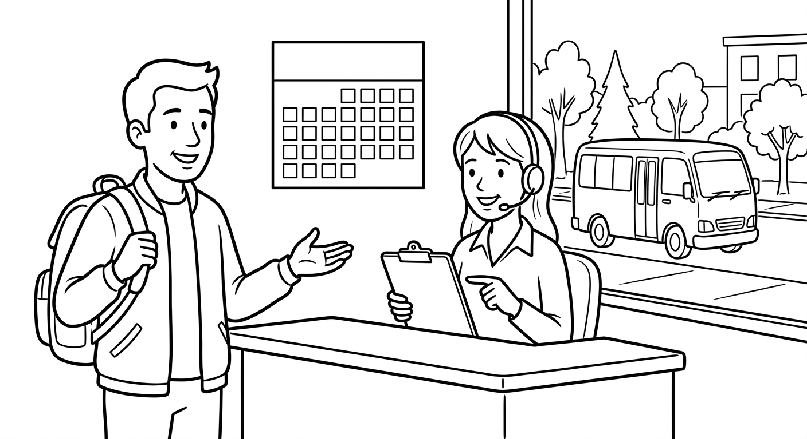

B3 Foundation Test 1
Settling in, rules and advice, rights and duties, plans, and Plan B. Listen for rules and plans, read a practical notice, write about a plan with a condition, and use grammar in real situations.

| Section | Points | Score |
|---|---|---|
| 1. Listening | 25 | ____ / 25 |
| 2. Reading | 20 | ____ / 20 |
| 3. Writing | 20 | ____ / 20 |
| 4. Grammar and Vocabulary | 35 | ____ / 35 |
| Total | 100 | ____ / 100 |
Suggested time: 70 minutes. The teacher will read the listening text twice. You may take short notes. Write clearly — communication matters as well as accuracy. (O professor lerá o texto de listening duas vezes. Comunicar a mensagem vale tanto quanto a gramática perfeita.)
Listening: Week Two and the Saturday Trip
Before reading: give students 45 seconds to preview Questions 1–5. Read the complete script once at natural but careful B3 speed. Pause for 30 seconds. Read it a second time. Do not explain vocabulary during the test. Total recommended time: Listening 12 min, Reading 15 min, Writing 18 min, Grammar/Vocabulary 25 min.
Coordinator: Good evening, everyone, and welcome to Week Two of the course. Before we start, please remember the rules. You must bring your student card to every class, and you mustn't use your phone during the lessons. You don't have to buy the books — the library lends them for free.
Student: Excuse me, can I ask a question? What time does the Saturday trip start?
Coordinator: Good question. The bus is going to leave at eight thirty from the main gate. We will visit the city museum first.
Student: Should we bring lunch?
Coordinator: You should bring water and a small snack. And listen carefully: if it rains, we will visit the science center instead of the museum.
Student: So the bus leaves at eight thirty from the main gate, and if it rains, we go to the science center. Is that right?
Coordinator: Exactly. See you all on Saturday.
Answer with a word, phrase, or short sentence.
What must students bring to every class?
Their student card.What mustn't students do during the lessons?
Use their phones.Do students have to buy the books? Why or why not?
No — the library lends them for free.What time is the bus going to leave, and from where?
At 8:30, from the main gate.What will the group do if it rains?
They will visit the science center instead (of the museum).Reading: Volunteer Welcome Notice
Welcome, new volunteers!
As a volunteer, you have the right to free training and a rest break every three hours. You can use the volunteer room on the second floor at any time.
Volunteers also have duties. You must sign in at the front desk when you arrive, and you should tell your team leader if you are going to miss a day. Volunteers mustn't share visitors' personal information with anyone.
Next month, the center is going to open a new computer room. If you want to help there, you must finish the basic training first. Training happens every Tuesday at 6 p.m.
Thank you for joining us!
Name two rights volunteers have.
Any two: free training; a rest break every three hours; using the volunteer room.What must volunteers do when they arrive?
Sign in at the front desk.What mustn't volunteers do?
Share visitors' personal information.What must a volunteer do before helping in the new computer room?
Finish the basic training (Tuesdays at 6 p.m.).Writing: Your Plan for the Saturday Trip
Your class is going on the Saturday trip. Write 60–80 words to a classmate. Include:
- your plan for Saturday (use going to);
- one question asking for advice (use Should I...?);
- one rule everyone must follow;
- a Plan B with if;
- a friendly closing.
Hi Ana! On Saturday I am going to take the 8:30 bus with the class. We are going to visit the city museum first. Should I bring lunch, or is there a food court near the museum? Remember: everyone must bring a student card. If it rains, we will go to the science center instead. See you at the main gate!
| Writing criterion | Points | Teacher score |
|---|---|---|
| Completes the communicative purpose and includes required details | 8 | ____ / 8 |
| Message is organized and understandable | 4 | ____ / 4 |
| Target language (future, modals, first conditional) supports meaning | 4 | ____ / 4 |
| Vocabulary, spelling, and punctuation are clear enough | 4 | ____ / 4 |
Do not deduct the same error twice. A message with imperfect grammar can score well when it achieves the purpose and remains easy to understand. Message completion comes before accuracy.
Grammar and Vocabulary in Context
Complete or rewrite each everyday situation.
Rewrite using a modal verb: “It is necessary for all members to bring an ID.”
All members must bring an ID. / All members have to bring an ID.Correct the sentence: “If it will rain, we will cancel the picnic.”
If it rains, we will cancel the picnic.What to Keep and What to Practice Next
| Skill | Score | Next action |
|---|---|---|
| Listening | ____ / 25 | Listen for rules (must/mustn't), plans, and the Plan B condition. |
| Reading | ____ / 20 | Separate rights (can) from duties (must) and prohibitions (mustn't). |
| Writing | ____ / 20 | State the plan, ask for advice, and add one condition with if. |
| Grammar/Vocabulary | ____ / 35 | Choose the modal or future form that matches the situation. |